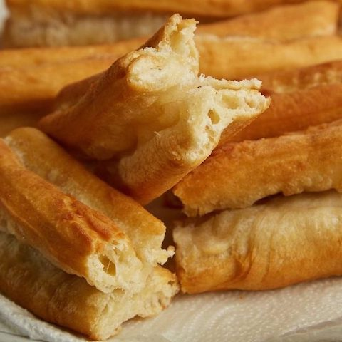

Chinese Doughnut (Youtiao) Recipe

Description
The Chinese doughnut (youtiao) is a staple part of breakfast in Asia. They're
usually eaten with sweetened soymilk to create a sweet and savory crunchy texture.
Since this recipe only uses six ingredients, the youtiao can be easily made at home.
Make the youtiao overnight to enjoy them for breakfast the next day.
Ingredients
- 1 1/2 cups of sifted all-purpose flour
- 2 Tbsp. vegetable oil
- 3 tsp. baking powder
- 1/2 tsp. cane sugar
- 3/4 tsp. kosher salt
- 1/2 cup room temperature filtered water
Steps
- Sift the dry ingredients together before mixing in oil and water.
- Knead the dough for 3-5 hours and let rest in a covered bowl for 1 hour (warm area).
- Remove dough from bowl then punch it roughly 15 times.
- Knead the dough for 10 minutes and place in a sealed plastic bag and leave it to rest
in the refrigerator overnight.
- Remove the dough from the bag the following morning and let it come to room temperature (roughly 2 hours).
- Roll out the dough and shape it for deep frying.
- Let it fry for about 2 min and let rest for 2 min after on a paper towel or rack.
Recipe found at Angel Wong's Kitchen